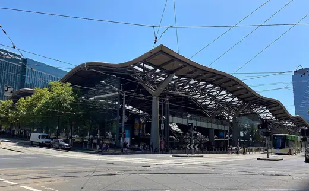
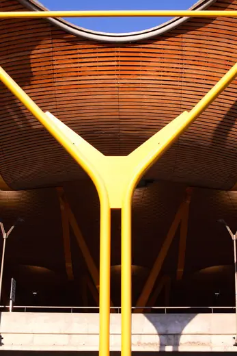

Buildings 96
Sort
 Lloyd's Building1986 · London
Lloyd's Building1986 · London Palace of Peace and Reconciliation2006 · Astana
Palace of Peace and Reconciliation2006 · Astana Millennium Dome1999 · London
Millennium Dome1999 · London Reichstag1999 · Berlin
Reichstag1999 · Berlin The Bow2012 · Calgary
The Bow2012 · Calgary Jacob K. Javits Convention Center1986 · New York
Jacob K. Javits Convention Center1986 · New York Commerzbank Tower1997 · Frankfurt
Commerzbank Tower1997 · Frankfurt Al Faisaliah Tower2000 · Riyadh
Al Faisaliah Tower2000 · Riyadh ICC Berlin1979 · Berlin
ICC Berlin1979 · Berlin Weltstadthaus Peek & Cloppenburg2005 · Cologne
Weltstadthaus Peek & Cloppenburg2005 · Cologne Sapporo Dome2001 · Sapporo
Sapporo Dome2001 · Sapporo Antwerp Law Courts2006 · Antwerp
Antwerp Law Courts2006 · Antwerp 30 St Mary Axe2004 · London
30 St Mary Axe2004 · London Hong Kong International Airport Terminal 11998 · Hong Kong
Hong Kong International Airport Terminal 11998 · Hong Kong Maison Hermès2001 · Tokyo
Maison Hermès2001 · Tokyo
Southern Cross Station2006 · Melbourne Montreal Biosphère1967 · Montreal
Montreal Biosphère1967 · Montreal Kurilpa Bridge2009 · Brisbane
Kurilpa Bridge2009 · Brisbane KPN Tower2000 · Rotterdam
KPN Tower2000 · Rotterdam Waterloo International1993 · London
Waterloo International1993 · London Torre de Collserola1992 · Barcelona
Torre de Collserola1992 · Barcelona SEC Armadillo1997 · Glasgow
SEC Armadillo1997 · Glasgow Deutsche Bank Place2005 · Sydney
Deutsche Bank Place2005 · Sydney Centre Pompidou1977 · Paris
Centre Pompidou1977 · Paris Tokyo International Forum1996 · Tokyo
Tokyo International Forum1996 · Tokyo National Stadium, Singapore2014 · Singapore
National Stadium, Singapore2014 · Singapore Hajj Terminal, King Abdulaziz International Airport1981 · Jeddah
Hajj Terminal, King Abdulaziz International Airport1981 · Jeddah Wembley Stadium2007 · London
Wembley Stadium2007 · London Beijing National Aquatics Center2008 · Beijing
Beijing National Aquatics Center2008 · Beijing Helix Bridge2010 · Singapore
Helix Bridge2010 · Singapore Allen Lambert Galleria, Brookfield Place1992 · Toronto
Allen Lambert Galleria, Brookfield Place1992 · Toronto Sony Center2000 · Berlin
Sony Center2000 · Berlin National Space Centre2001 · Leicester
National Space Centre2001 · Leicester Lord's Media Centre1999 · London
Lord's Media Centre1999 · London Bilbao Metro entrances ("Fosteritos")1995 · Bilbao
Bilbao Metro entrances ("Fosteritos")1995 · Bilbao Žižkov Television Tower1992 · Prague
Žižkov Television Tower1992 · Prague Munich Olympic Stadium1972 · Munich
Munich Olympic Stadium1972 · Munich New York Times Building2007 · New York
New York Times Building2007 · New York Museum of Tomorrow2015 · Rio de Janeiro
Museum of Tomorrow2015 · Rio de Janeiro HSBC Main Building1986 · Hong Kong
HSBC Main Building1986 · Hong Kong London Eye2000 · London
London Eye2000 · London Eden Project2001 · Bodelva
Eden Project2001 · Bodelva The Glasshouse2004 · Gateshead
The Glasshouse2004 · Gateshead Gateshead Millennium Bridge2001 · Gateshead
Gateshead Millennium Bridge2001 · Gateshead
Madrid-Barajas Airport Terminal 42006 · Madrid Torre Cepsa2008 · Madrid
Torre Cepsa2008 · Madrid Beijing Capital International Airport Terminal 32008 · Beijing
Beijing Capital International Airport Terminal 32008 · Beijing Willis Building1975 · Ipswich
Willis Building1975 · Ipswich